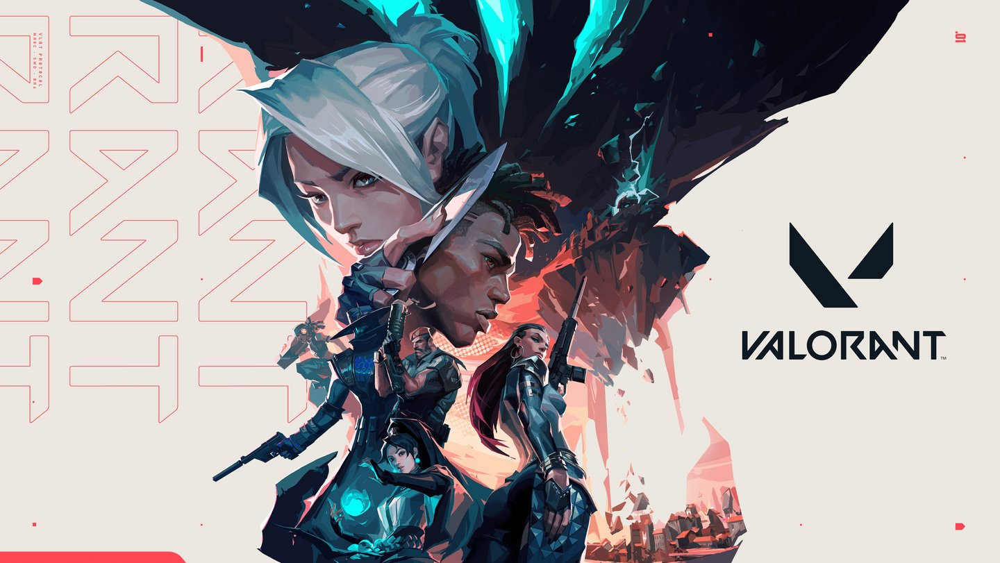
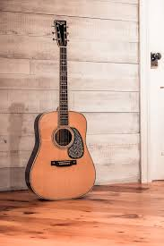

About Me
Samuel Lee first became interested in Computer Science at Saint Francis High School at Mountain View, CA during one of his CS classes where he built a Tic-Tac-Toe game with a computer agent (made randomized moves) for a final project. Wanting to take the project further, he delved into the topics of AI and ML to see how a computer agent can learn how to beat opponents. After much research (and inspiration from his summer research visit to the Computing Department at University of Alberta), he developed an AI agent powered by novel algorithm UCB* to make more intelligent decisions through the utilization of Monte Carlo Tree Search (MCTS). Currently, Samuel is pursuing Computer Science at Northwestern University, focusing his studies on topics such as AI, ML, and databases through coursework and projects.
His area of interests (within CS) includes Natural Language Processing, Computer Vision, and applying AI into games. However, he enjoys tackling a wide variety of problems in different domains where CS can be applied and strives to deepen his understanding in CS fundementals and its applications.
His hobbies include playing video games and playing the guitar.

